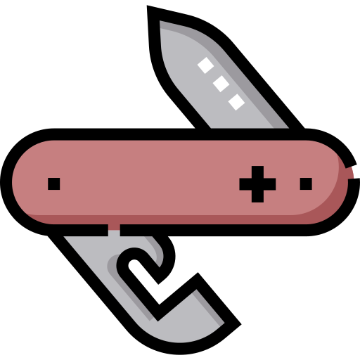

Unifies lots of other CLI tools. Why bother downloading and trying to remember commands for lots of different CLI tools when you can just use one instead?
Not comfortable with the Command Line? Or just prefer graphical interfaces because it's the 21st century? Use the Starter Pack GUI instead!

Do you want your new app to be the best it can possibly be? We actively promote best practices. Starter Pack is more than just a tool.
Starter Pack includes
Try Starter Pack now
Download The GUI (macOS) →Spotted a bug? Got a feature request? Create a pull request :)